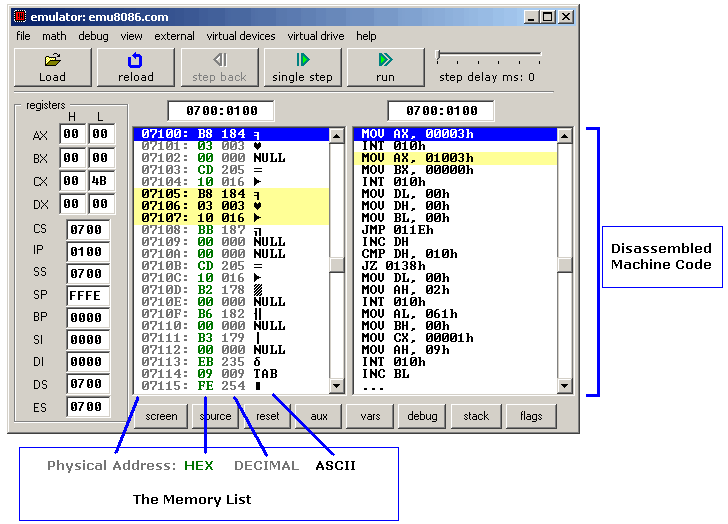

TEXT SCRAMBLING in TRIAL VERSION OUTPUT! In evaluation mode, Help+Manual will scramble individual characters in random words in your published output files. This is a limitation of the free trial version. This help system was created with an evaluation copy of Help+Manual.
Using the emulator
If you want to load your code into the emulator, just click "Emulate" button  .
.
But you can also use emulator to load executables even if you don't have the original source code. Select Show emulator from the Emulator menu.

Try loading files from "MyBuild" folder. If there are no files in "MyBuild" folder return to source editor, select Examples from File menu, load any sample, compile it and then load into the emulator:

[Single Step] button executes instructions one by one stopping after each instruction.
[Run] button executes instructions one by one with delay set by step delay between instructions.
Double click on register text-boxes opens "Extended Viewer" window with value of that register converted to all possible forms. You can modify the value of the register directly in this window.
Double click on memory list item opens "Extended Viewer" with WORD value loaded from memory list at selected location. Less significant byte is at lower address: LOW BYTE is loaded from selected position and HIGH BYTE from next memory address. You can modify the value of the memory word directly in the "Extended Viewer" window,
You can modify the values of registers on runtime by typing over the existing values.
[Flags] button allows you to view and modify flags on runtime.
Virtual drives
Emulator supports up to 4 virtual floppy drives. By default there is a FLOPPY_0 file that is an image of a real floppy disk (the size of that file is exactly 1,474,560 bytes).
To add more floppy drives select [Create new floppy drive] from [Virtual drive] menu. Each time you add a floppy drive emulator creates a FLOPPY_1, FLOPPY_2, and FLOPPY_3 files.
Created floppy disks are images of empty IBM/MS-DOS formatted disk images. Only 4 floppy drives are supported (0..3)!
To delete a floppy drive you should close the emulator, delete the required file manually and restart the emulator.
You can determine the number of attached floppy drives using INT 11h this function returns AX register with BIOS equipment list. Bits 7 and 6 define the number of floppy disk drives (minus 1):
Bits 7-6 of AX:
00 single floppy disk.
01 two floppy disks.
10 three floppy disks.
11 four floppy disks.
Emulator starts counting attached floppy drives from starting from the first, in case file FLOPPY_1 does not exist it stops the check and ignores FLOPPY_2 and FLOPPY_3 files.
To write and read from floppy drive you can use INT 13h function, see list of supported interrupts for more information.
emulator can emulate tiny operating system, check out operating system tutorial.